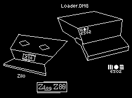

Zilo
Zilo is the lil' guy you saw at the main page!
This guy is a mainframe obsessed guy, speak to him about VM/ESA, he'll spend hours geeking out
Doesn't have many friends though...
LOADER.DMG
LOADER is somewhat the main character in my Twitter!
He's a computer program, and trust me, you don't wanna annoy him!
His creator didn't meant for him to become self aware...
Who are them?
Both of these guys represent both my Hardware knowledge (Zilo) and Software knowledge (LOADER.DMG)
Zilo is a bat who is way into hardware, either that being old from the late 70's, or as new as today's hardware!
LOADER.DMG is a computer program that focuses a lot in the code and structure of programs, he actually
came from a Macintosh 512K, therefore the .DMG at the end!
Both of them are introverted and reflect a bit of my personality!